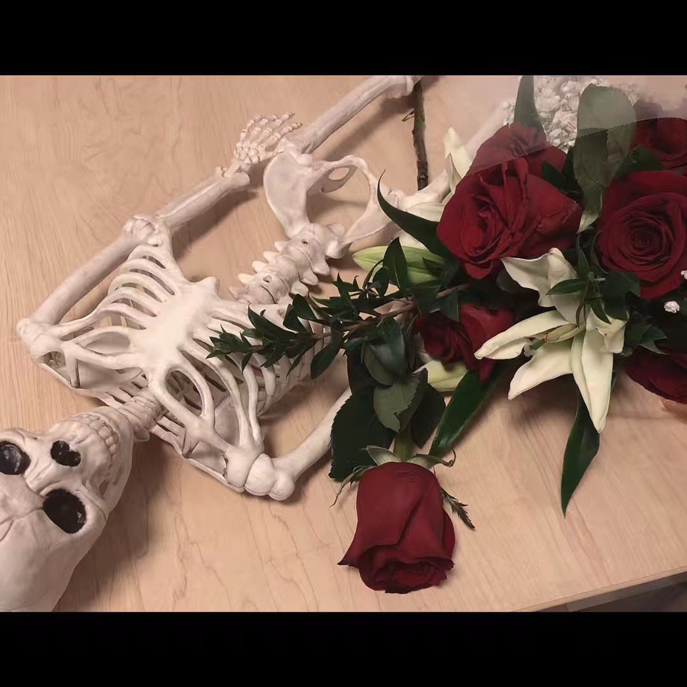
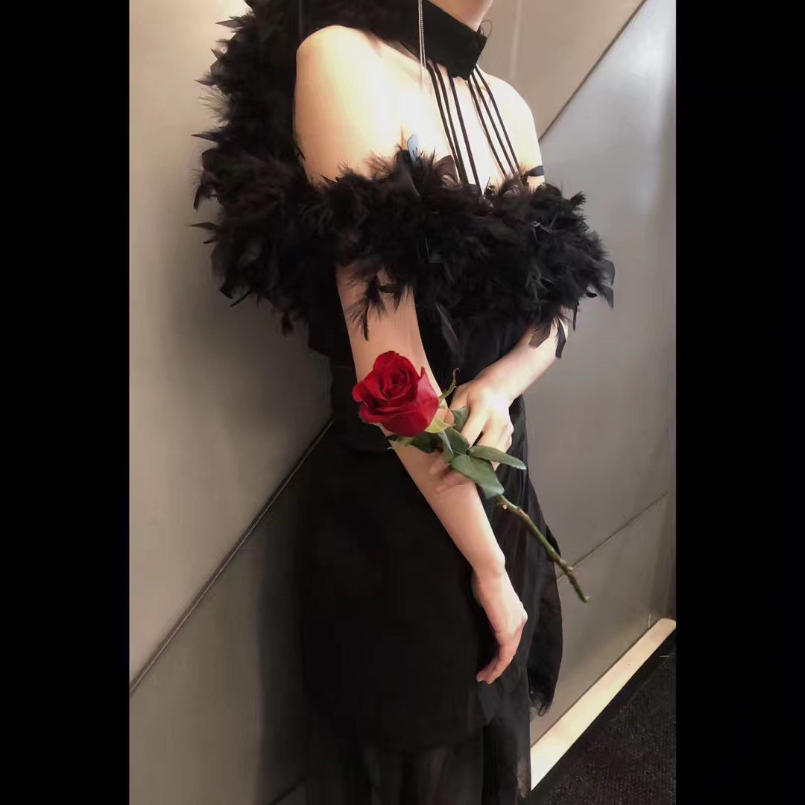
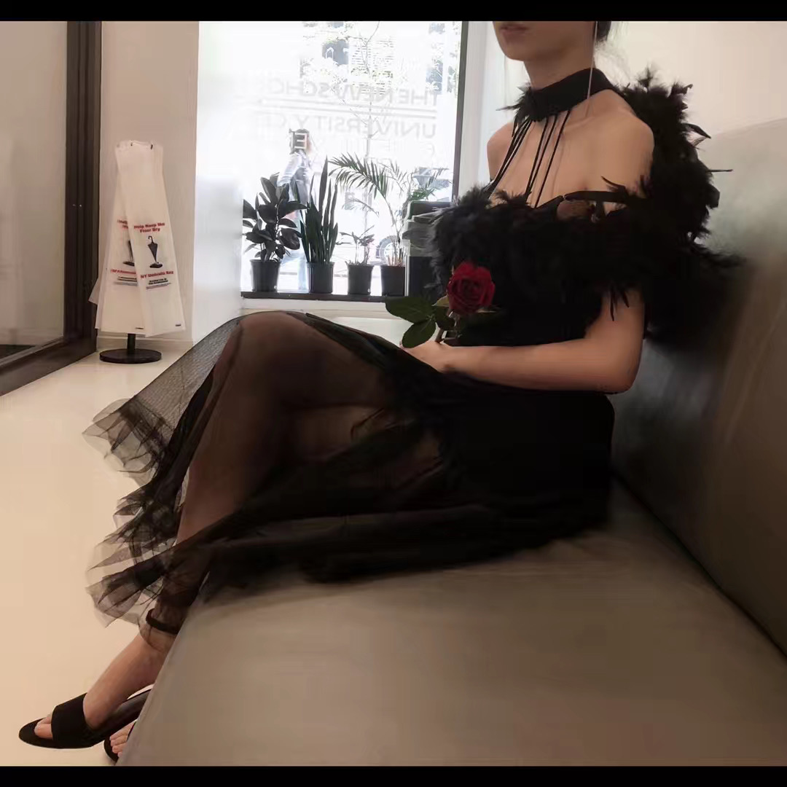
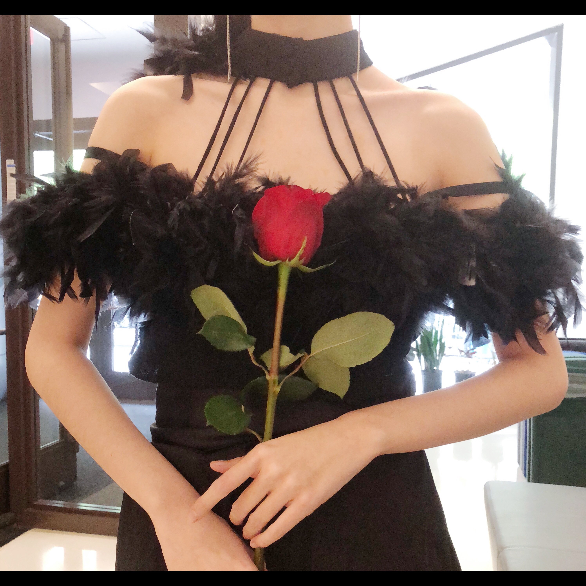
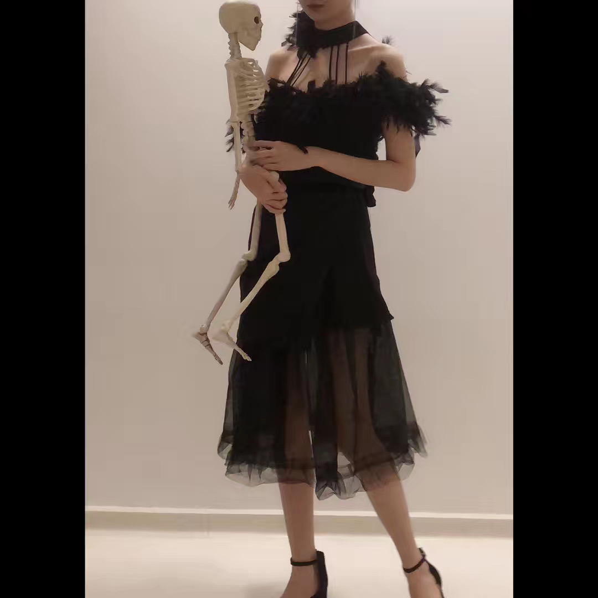
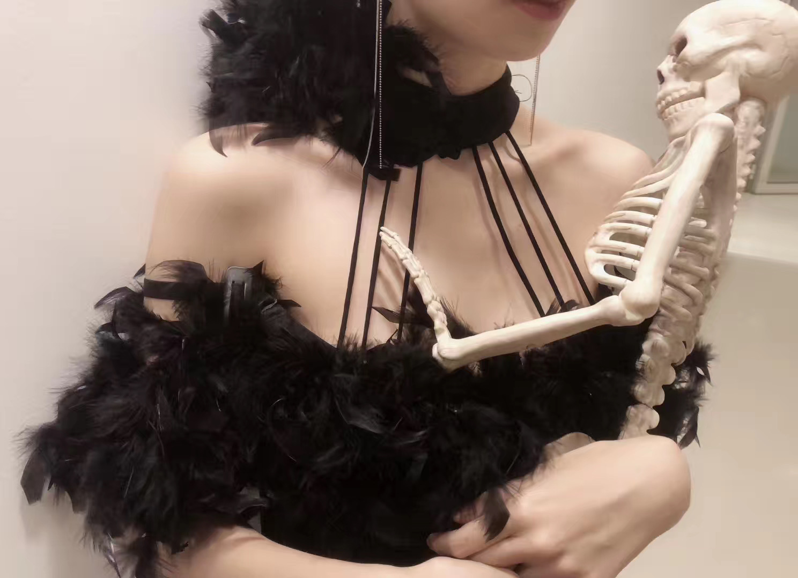
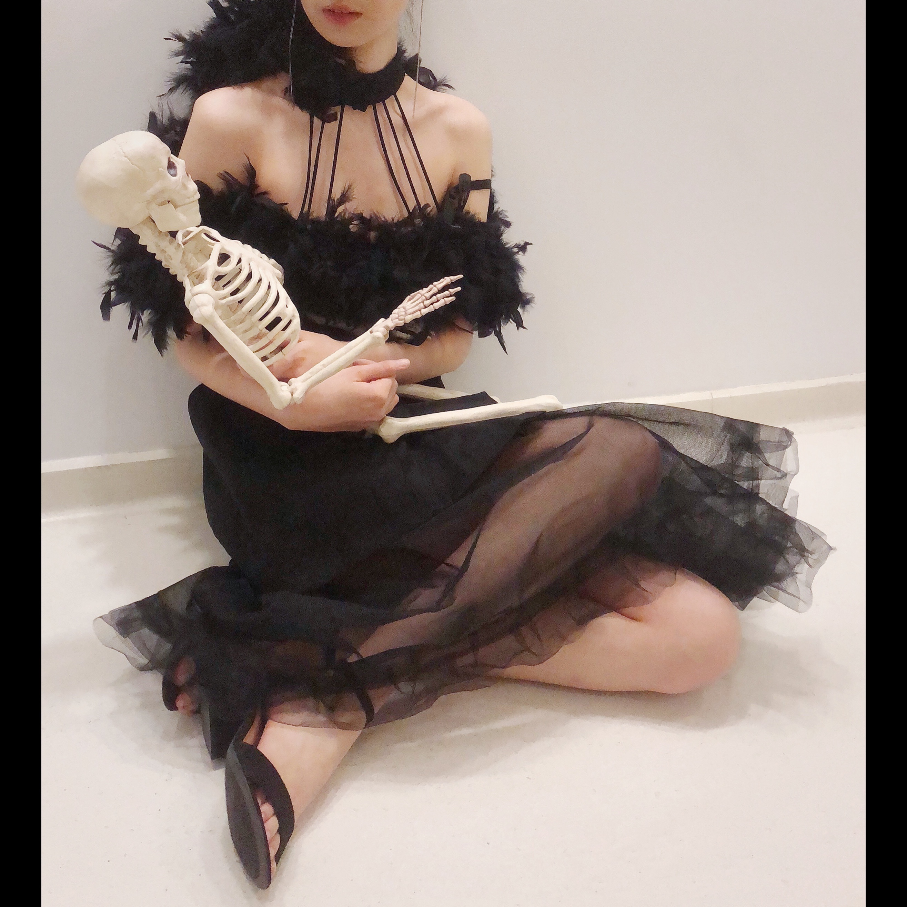
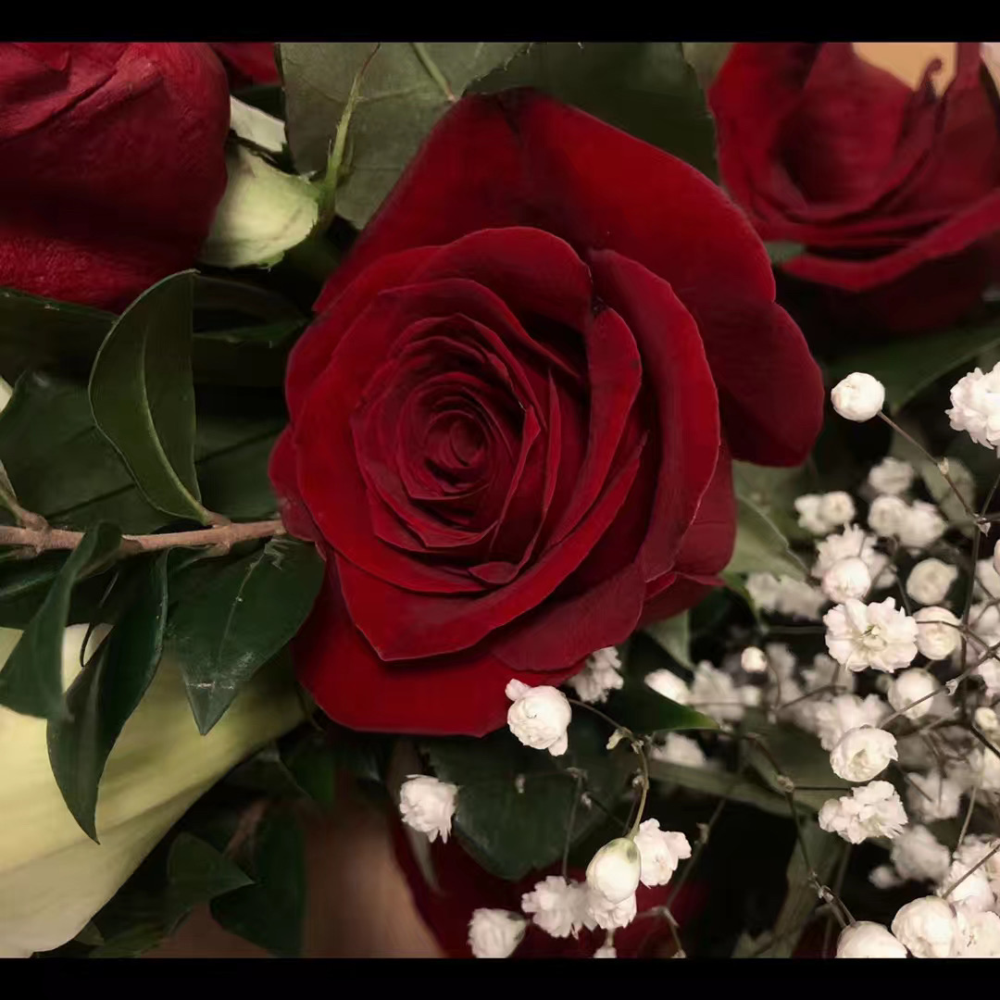

Possibilities in Fashion
Theme
Fast fashion is always a huge issue, people in nowadays are used to “buy and throw” clothes, however, this act cause pollutions.
Being a designer in the 21th century, it is important to keep in mind that saving resources is also one of our responsibilities.
In this project, I chose to use old clothes and fabric to create a brand new dress. I named this “New Recycled Fashion”.
☆
Medium
Materials: Old formal dresses, recycled black fabric, old boa, black yarn.
☆
     Others
Model: Kaylee Sheung
Photo: Ivan
Date: 2019. 12. 20
☆
